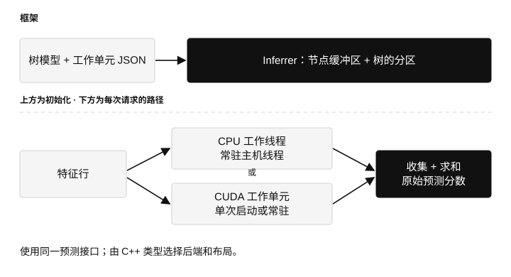
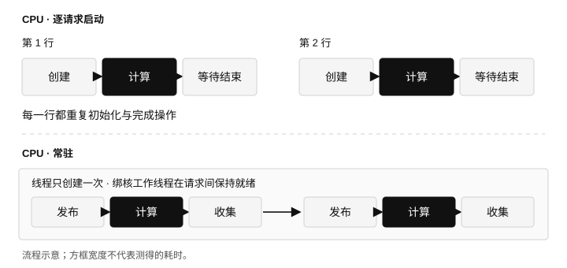
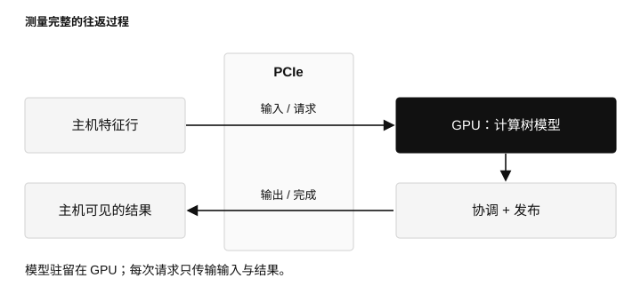
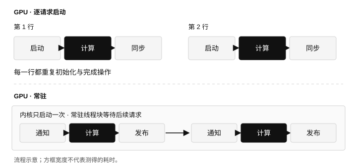
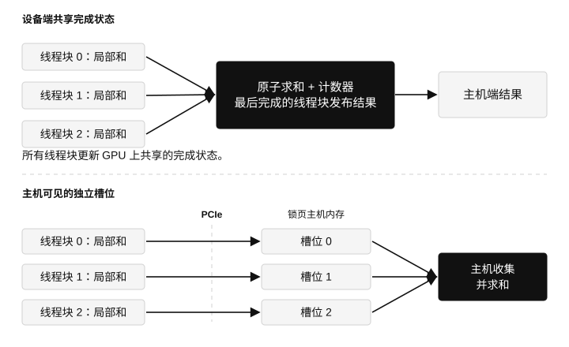
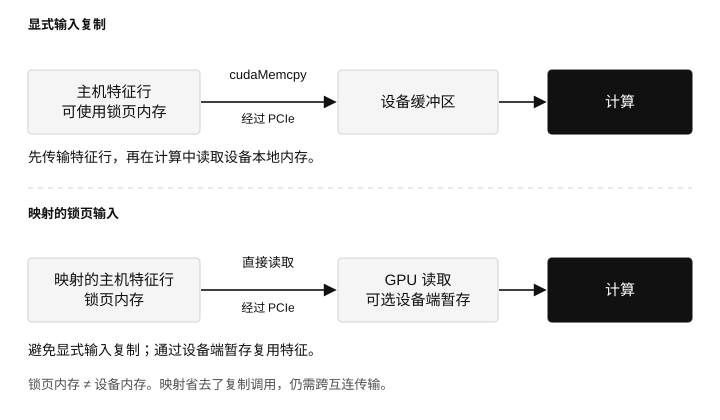

如何将单样本树模型推理优化到几微秒？
本文介绍 QLeaf：一个框架与基准测试项目，从内核启动到主机与设备之间的交接，逐步降低整条推理路径上的延迟。
在 AI 和深度学习的时代，为什么还要讨论树模型？一个实际的原因是，在各种表格数据问题上，从高能物理中的模式识别到机器人中的实时决策，树模型仍然表现良好，有时甚至达到最优水平。树模型在训练和推理中面临的挑战与神经网络不同。本文关注推理。例如，梯度提升作为最常用的树模型方法之一，通常会生成大量浅层树。
大量树提供了可观的并行度，但有限的深度意味着，无论使用 CPU 还是 GPU，处理器在每棵树上完成的工作都很少。这并不是 GPU 擅长的典型负载：把树分配给线程后，每个线程的工作可能少到不足以让 GPU 忙起来。在单样本推理这一极端情形下，主机与设备之间的交接和协调开销可能主导端到端延迟。对于算术强度较高的负载，这些开销通常能分摊到更多计算上。因此，传统做法是使用 CPU 进行树模型推理，并在可能时利用多个核心并行计算。
本文介绍 QLeaf，一个系统性的基准测试框架，也可能用于生产环境。它为多线程 CPU 与 GPU 后端提供统一接口。我们先看延迟消融实验和框架结构，再讨论采用常驻工作线程与无锁交接的 CPU 实现。随后从朴素的 GPU 实现出发，通过一系列优化，得到具有竞争力的 GPU 实现。有意思的是，请求时间中究竟有多少花在树计算之外，以及如何通过一些不太常规的技巧降低这部分开销。
本文内容： 延迟消融 · 框架 · CPU · GPU · 负载的影响
从延迟消融实验开始
下表展示了针对 5,000 棵深度为六的 HIGGS 树的一条优化路径，输入包含 28 个特征，每个线程块使用 512 个 CUDA 线程。常驻内核各行的优化依次累积；单次启动一行是独立的参考。数值为主机到主机的延迟，单位是微秒。
| GPU 遍历配置 | 中位数，µs | p99，µs |
|---|---|---|
| 单次启动内核，映射输入 | 11.247 | 12.239 |
| 初始常驻内核，复制输入 | 26.735 | 30.703 |
| 移除设备端跨线程块完成协调 | 17.487 | 20.671 |
| 使用单一请求轮询者 | 8.631 | 9.375 |
| 读取映射的主机输入 | 7.079 | 7.771 |
| 暂存输入并使用哨兵值通知 | 6.891 | 7.375 |
起初，让内核常驻反而使请求更慢。移除跨线程块的完成协调、减少请求轮询者数量，带来了最大的收益；随后改变输入交接方式，使中位数降到七微秒以下。后文会逐一解释每行优化背后的机制。
计时从特征暂存前开始，到 CPU 可以读取结果时结束。对于映射输入，当前特征行复制到映射主机缓冲区的过程也包含在这个区间内。每次运行包含 10,000 次预热请求和 100,000 次测量请求。模型加载与工作线程初始化不计入稳态测量。
基准测试机器配备 Intel Core i7-12700F 和一块显存为 12 GiB、支持 CUDA 的消费级 GPU。主要比较中关闭 CPU 睿频；GPU 的应用时钟请求值分别为 SM 1,800 MHz、显存 7,501 MHz。第二组负载 epsilon 有 2,000 个特征，而非 28 个。两组负载均使用深度为六、分别包含 500、1,000、2,000 和 5,000 棵树的集成模型。完整基准报告记录了分布、配置和数据来源。
框架：模型、工作单元与归约
核心接口是 qleaf::Inferrer。它持有模型表示，将树集合划分给工作单元，提交特征行并收集各工作单元的结果。目前预测输出是一个标量原始分数，即各棵树输出之和。
C++ 类型决定节点布局、工作单元实现、负载均衡器与归约器。运行时 JSON 提供模型和工作单元配置，例如 CPU 亲和性。因此，可以在保持预测接口和工作负载不变的情况下，改变执行策略。

- 节点缓冲区：保存树数据。
CompactNodeBuffer将分裂阈值与特征索引存放在不同数组中；TreeNodeBuffer提供直接的节点布局。 - 负载均衡器：将树分组分配给工作单元。默认的
FairBalancer按树的数量均分。 - 工作单元：计算分配给自己的树。CPU 遍历、CPU 位掩码计算与 CUDA 工作单元使用同一接口。
ThreadedWorker在 CPU 工作单元外封装一个常驻主机线程。 - 归约器：合并各工作单元的部分和。
RegressionReducer将其相加，得到原始分数。
在接口层面，一次请求很简单：
// The concrete Inferrer type selects the backend and layout.
auto margin = inferrer.predict(features);
在内部，推理器先向所有工作单元提交特征行，再收集结果，让线程化工作单元能并发计算各自的分区。一个 CUDA 工作单元管理自己的线程块网格，这是工作单元内部的另一层并行。
实现位于 qleaf.h；CUDA 策略和工作单元位于 gworkers.cuh。
CPU：减少每棵树的工作，并让工作线程保持就绪
每棵树只沿一条路径遍历
对于深度为六的二叉树，推理只需进行六次分裂判断，然后读取叶节点的值，无需检查所有内部节点。QLeaf 的分支遍历工作单元在每一层通过算术运算计算下一节点索引，并累加各棵树的叶值。
这是针对紧凑模型表示的一段小循环。代码向编译器暴露了不存在别名这一条件，为跨树向量化留下空间。不过，单条路径内的依赖仍然存在：下一个特征与阈值取决于前一次比较。
另一种位掩码工作单元会计算条件，并对可达叶节点的掩码求交。这让工作更规则，但比沿单一路径遍历需要更多比较。对于浅层树，额外工作必须通过并行执行获得足够收益才有意义。
线程只创建一次，随后交接请求
如果每次预测都创建线程并等待其结束，就会给一个仅持续几微秒的请求增加初始化和调度工作。QLeaf 在构造推理器时就创建常驻线程。每个线程持有一组树，并可绑定到一个 CPU 核心。

交接使用原子操作，而非由互斥锁保护的任务队列。调用者通过 release store 发布特征指针。工作线程用 acquire load 观察到指针后，计算自己的分区，再以 release 语义发布就绪标志。调用者通过 acquire load 等待，随后读取结果。特征行在预测完成前始终保持有效。
指针和就绪标志构成一个小型请求—响应协议，同一时刻只有一个在途请求。这避免了稳态路径上的线程启动或阻塞唤醒。工作线程在等待时自旋，因此这种低延迟配置即使在请求之间也会占用核心。
线程放置也是算法的一部分
在混合架构 CPU 上，“八个线程”并不是完整的配置。物理核心、同核 SMT 线程和能效核不能互换。基准比较了物理核心优先与同核线程优先的放置方式，并预留一个逻辑 CPU 负责分发。
在使用两个、四个或八个工作线程的 24 项比较中，物理核心优先赢得了 18 项。使用 16 个工作线程时，同核线程优先在八项比较中赢得七项。后一种顺序可以先使用性能核的 SMT 同核线程，再把工作分配到能效核。
对于 5,000 棵 HIGGS 树，八个工作线程在物理核心优先时耗时 12.351 µs，同核线程优先时为 28.751 µs。使用 16 个工作线程时，结果反转：分别为 24.191 µs 和 11.959 µs。只有工作分配与放置方式能抵消额外协调开销时，增加线程才有帮助。
| 工作负载 | 最佳 CPU 中位数，µs | 最佳未缓存 GPU 中位数，µs |
|---|---|---|
| HIGGS，500 棵树 | 2.177 | 3.803 |
| HIGGS，5,000 棵树 | 11.959 | 6.891 |
| epsilon，500 棵树 | 2.427 | 7.027 |
| epsilon，5,000 棵树 | 12.559 | 9.871 |
这些 CPU 结果使用关闭睿频的策略。另行测量的开启睿频的 CPU 参考中，5,000 棵 HIGGS 树达到 5.679 µs，5,000 棵 epsilon 树达到 6.191 µs。纯主机请求完全避免了与设备的往返通信，而 CPU 频率在这个时间尺度上很重要。
GPU：把延迟预算用在树计算上
1. 每个请求启动一次内核
最简单的 GPU 路径是启动网格、计算树集合、等待完成，再将各线程块的部分和返回主机进行最终求和。树集合已驻留在 GPU 上，无需在每次预测时重新传输。
一个线程可以沿一棵树的路径执行，同时并行处理许多树。每棵树的算术运算很少，因此内核启动、输入传输、同步和结果可见性占据了请求时间的很大一部分。更多的算术吞吐量并不能消除这些成本。

2. 让内核常驻
常驻内核只启动一次，然后循环处理请求。这相当于 CPU 工作线程池在 GPU 上的对应形式：初始化移出稳态路径，每一行新数据通过交接协议到达。

最初的常驻实现将特征行复制到设备内存，推进序列标志，让所有线程块轮询它，再通过设备范围的完成逻辑合并结果。其延迟中位数为 26.735 µs，高于单次启动、映射输入参考的 11.247 µs。这项比较同时改变了输入路径和启动策略，展示的是初始设计的成本，而非单独隔离内核启动开销。
当协议要求所有线程块都能取得进展时，常驻网格必须能同时驻留在设备上。QLeaf 会检查共同驻留条件，而不是假设任意大小的网格都能参与握手。
3. 让线程块独立完成，在主机上归约
每个线程块首先在内部归约自己的树输出。最初的设计将部分和原子地加到共享的设备结果中，并更新共享完成计数器。最后到达的线程块发布完整结果并通知主机。
各线程块独立计算树，但完成时会争用共享状态。原子累加与最后到达者的协调，在请求中引入了一个串行步骤。
替代方案保留线程块内部归约，移除共享完成步骤。每个线程块把自己的和写入独立的、主机可见的锁页结果槽位。 CPU 等待所有槽位填满，然后对这组小规模线程块结果求和。

对于 5,000 棵 HIGGS 树，中位数从 26.735 降至 17.487 µs，p99 从 30.703 降至 20.671 µs。CPU 多做少量工作，就能简化设备端路径。
尚未填充的槽位包含 NaN；一个非 NaN 的部分和同时也充当完成标志。主机收集结果后重新初始化槽位。这依赖于部分和非 NaN 以及单请求协议。独立槽位消除了线程块之间的争用，但结果发布与缓冲区复用仍然需要明确定义的协议。
4. 一个线程块轮询主机，其余等待设备状态
如果每个线程块都反复读取一个系统可见的请求标志，成本会很高。许多消费者检查同一个标志，会制造流量，却没有完成有用的树计算。
单轮询者策略把这项工作交给零号线程块，由它检测请求并更新设备范围的广播序列。其他线程块等待设备端序列。在带暂存的变体中，零号线程块还会先准备特征行，再广播就绪状态。
这改变了等待发生的位置：大多数线程块不再观察主机可见的请求状态。对于 5,000 棵 HIGGS 树，中位数从 17.487 降至 8.631 µs。对于 500 棵树，反而从 6.419 小幅升至 6.647 µs。线程块较少时，新增的广播阶段能消除的流量也较少。
5. 映射锁页输入与显式复制
锁页内存是页面保持驻留的主机内存，可作为显式传输的数据源。映射进一步使它能够被 GPU 的加载和存储操作访问。在独立 GPU 上，访问映射主机内存仍需经过互连：“零复制”避免的是向独立设备缓冲区的显式复制，并非物理数据移动。NVIDIA 的内存指南解释了这一差别。

对于较小的特征行，发起并完成一次复制的成本可能高于实际移动这些字节的成本。HIGGS 的浮点特征仅有 112 字节。消除轮询风暴后，映射输入使 5,000 棵树的延迟中位数从 8.631 降至 7.079 µs。
如果许多工作单元反复从主机内存读取较大的特征行，直接访问的吸引力就会下降。暂存解决了这一复用问题：主导线程块将行读入设备缓冲区，发布就绪状态，各工作单元再使用暂存副本计算。CPU 仍需把每一行写入映射输入缓冲区；这次主机端复制仍包含在基准计时区间内。
6. 让数据自行表明已到达
序列标志协议将数据发布与通知分开：先准备特征，再发布具有顺序保证的请求标志。哨兵协议把这两项操作合在一起。
请求到来前，映射输入包含预留哨兵值。CPU 写入特征行。主导线程块检查并暂存特征，直到所有值都已到达，然后把映射输入重置为哨兵值，再通过设备端状态广播请求。计算读取的是暂存行，因此重置输入不会破坏正在处理的数据。
主机等待所有结果后才发送下一行。特征值必须有限，且不能使用预留的 +/-FLT_MAX 哨兵值。在这一协议下，稳态交接中由数据到达替代单独的主机可见请求标志。
对于 5,000 棵 HIGGS 树，中位数从 7.079 降至 6.891 µs，p99 从 7.771 降至 7.375 µs。收益小于前面的协调优化。这一步同时切换了暂存和哨兵通知，因此没有单独测量其中任何一项变化。
7. 挖掘每棵树内部有用的并行性
遍历只走一条路径，但后续步骤依赖前面的比较。位掩码计算进行更多比较，再合并可能叶节点的掩码。它的潜在优势是可以由多个执行通道分担工作。
每棵树只用一个线程时，额外工作通常得不偿失：带暂存的常驻位掩码路径处理 5,000 棵 HIGGS 树需 18.479 µs。调到每棵树四个线程后降为 12.311 µs，在受控比较中仍高于遍历的 6.891 µs。
布局也很重要。节点优先存储将相邻树中同一位置的节点放在一起；当相邻执行通道处理不同树时，这有助于合并访存。当多个通道处理同一棵树时，另一种布局可能更合适。对于 epsilon，在 1,000 和 2,000 棵树时，经调优的行优先位掩码工作单元是最佳 GPU 变体。布局和每棵树的线程数需要一起考虑。
8. 在常驻工作集容得下时缓存树
常驻内核可跨请求将树数据保存在共享内存中，避免反复从全局内存读取这些节点。代价是占用更多共享内存，可能限制常驻线程块的数量。
对于 500 棵 HIGGS 树，缓存参数扫描中匹配的未缓存遍历耗时 4.191 µs，单波次缓存为 3.333 µs。更广泛扫描中的最佳未缓存结果是 3.803 µs；使用匹配比较，才能区分缓存与线程块大小调优的影响。5,000 棵树的缓存常驻变体被跳过，因为其网格无法共同驻留。
工作负载改变了什么？
epsilon 的特征行约为 7.8 KiB，而 HIGGS 只有 112 字节。在 5,000 棵树时，移除跨线程块完成协调并选择轮询策略，使 epsilon 遍历从 16.639 降至 9.871 µs。加入映射与暂存通知后，反而增至 10.479 µs。此时复制输入的路径更合适。
这也解释了为什么 QLeaf 提供可组合的策略，而不是为所有负载选定一个配置。特征宽度改变通信成本，树集合的大小改变可分配的工作量，树深度与计算方法改变每棵树内部的工作，共享内存用量则改变哪些常驻网格能够同时驻留。
对于单样本推理，优化应从良好的 CPU 实现和完整请求的测量开始。在 GPU 上，消除重复启动只是第一步。降低跨线程块完成协调、主机轮询和输入交接的开销，才让常驻路径具有竞争力。最终延迟越来越受通信与结果可见性的影响；消融实验展示了降低这些成本的方法，但并未测量物理上的通信下界。